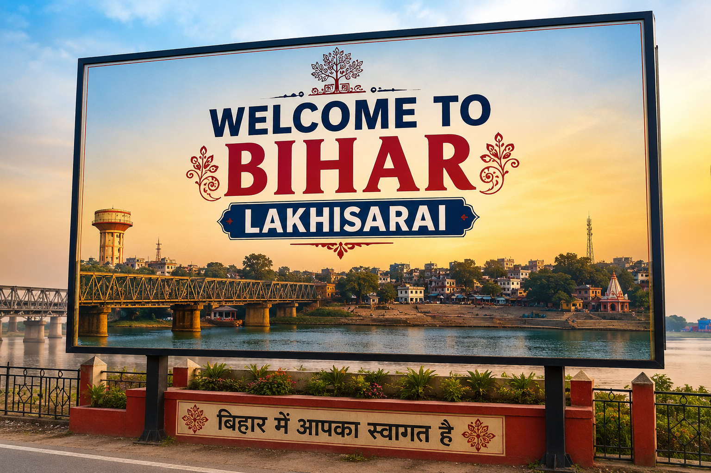
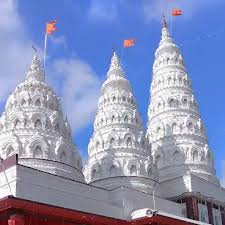
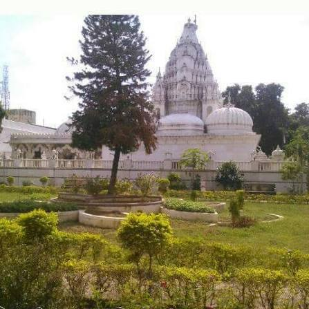

Your guide
"I have lived at Lakhisrai for over 20 years, so l can show you all of its best parts and hidden secrets"


Ashok Dham in Lakhisarai, Bihar, is a revered temple complex featuring a massive, self-manifested Shiva Lingam dedicated to Lord Shiva.
Shringi Rishi Dham in Lakhisarai, Bihar, blending lush hills, waterfalls, and sacred ties to Ramayana legends

Lachhuar is a great place to visit because it serves as the sacred gateway to Kshatriyakund, the revered birthplace of Lord Mahavira
"I have lived at Lakhisrai for over 20 years, so l can show you all of its best parts and hidden secrets"